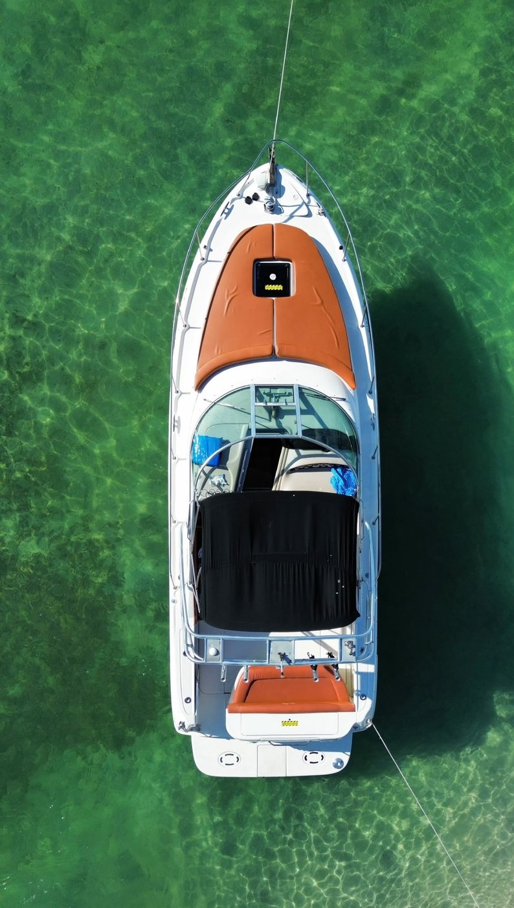
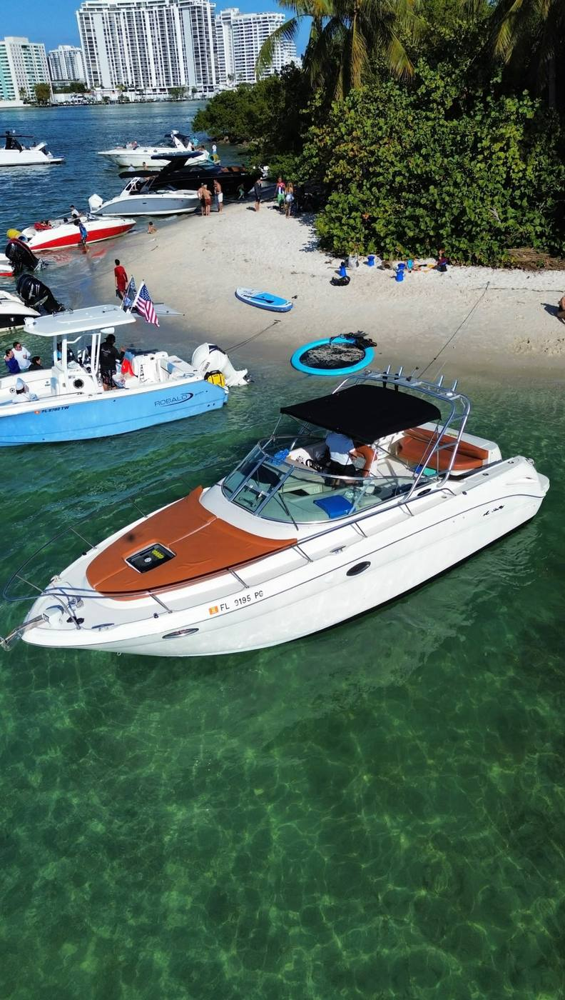
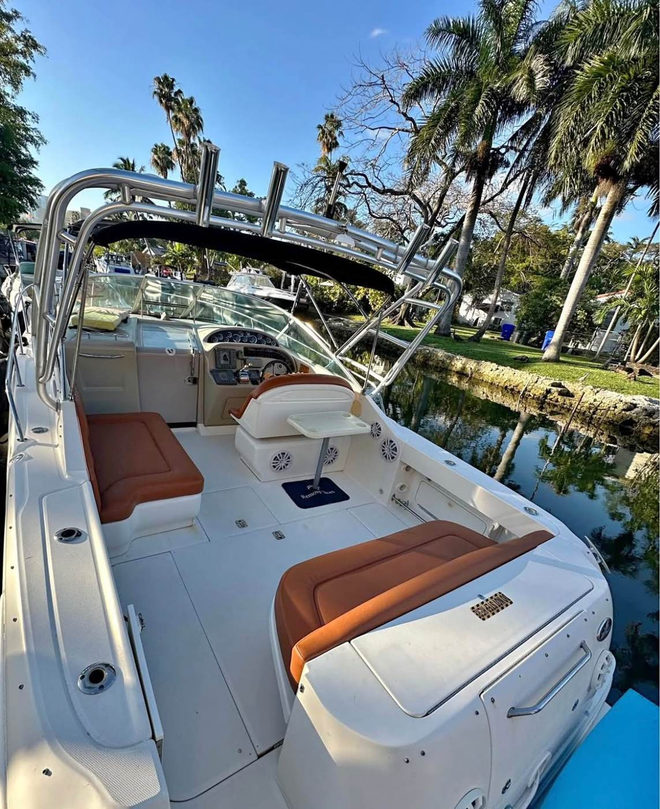
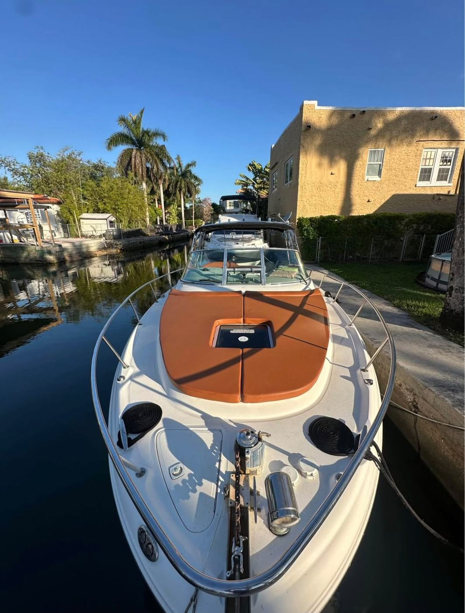
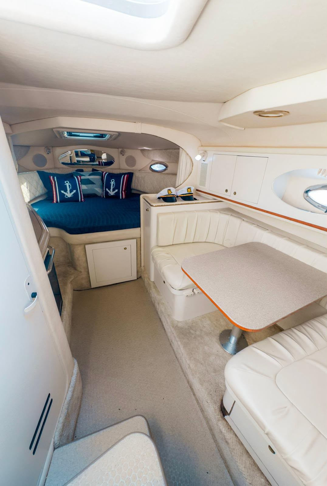
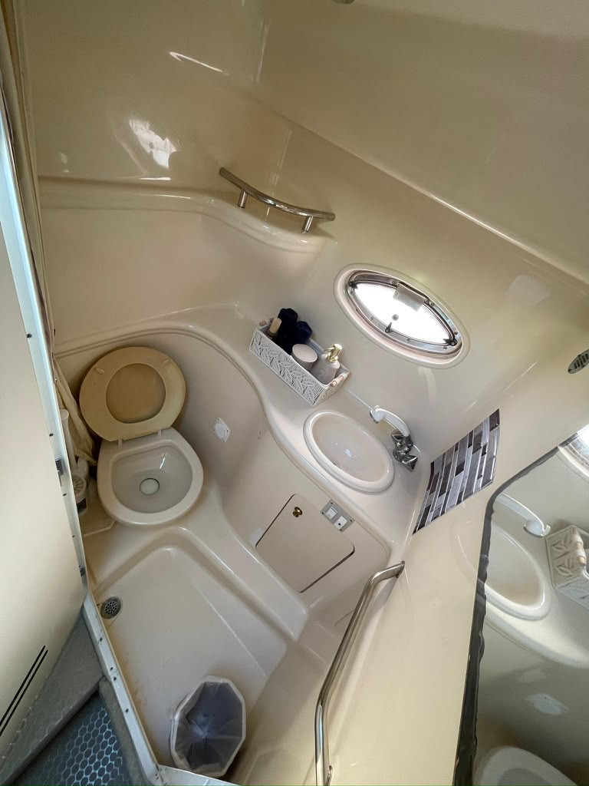
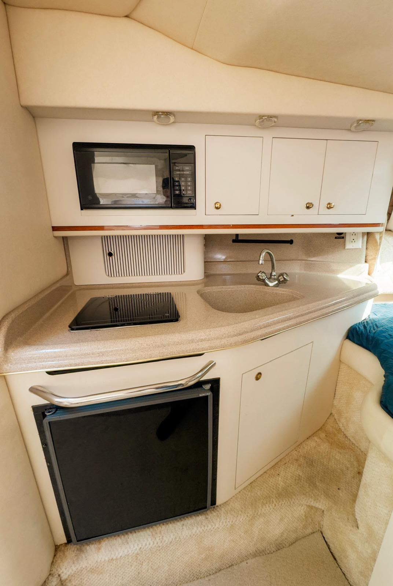

Cuatro personas, agua turquesa, sin ceremonia
El bote de entre semana — el que se reserva la misma mañana en que se decide salir. Bañera abierta, bimini arriba, y el camino más corto al banco de arena de todo lo que tenemos.
- Largo
- 32 pies
- Horas
- 4 · 5 · 6
- Mejor para
- Grupos chicos
- Cubierta
- Bañera + camarote
- Sombra
- Bimini
- Especialidad
- El banco de arena
Disponibilidad
Cargando disponibilidad…
La forma más barata de tener el mismo día
Para cuatro o cinco personas el Amberjack hace todo lo que hace el bote grande — el banco de arena, el baño, la ciudad de regreso — sin cobrarte trece asientos en los que no te vas a sentar.
Es abierto, es rápido, y llega al agua turquesa antes que cualquier otra cosa que tengamos.
Lo que no es
No es el bote para una despedida de trece personas, y te lo decimos en vez de tomar la reserva. Abajo hay camarote con baño cerrado y una cocina chica, pero el baño es chico — inodoro y lavamanos, no el compartimiento con ducha que tienen los otros dos — y la sombra en cubierta es un bimini y no un hardtop.
Si el día es largo, el grupo es grande, o la ocasión es lo importante, el Chris Craft 45 es la respuesta honesta y preferimos decirlo de entrada.
Qué trae
Capitán y gasolina, nevera con hielo, agua, bocina, piscina flotante y chalecos de todas las tallas — el mismo equipo de serie que los otros dos botes.
Abajo hay camarote con litera en V, baño y cocina — chicos, pero de verdad, y más de lo que da la mayoría de los botes abiertos de este tamaño.
Todas las fotos son de un paseo real
Ninguna es de catálogo. Salieron de las publicaciones donde el capitán nombra este bote.







Sea Ray Amberjack 32′
¿Cuántas personas caben en el Amberjack 32?
Es nuestro bote para grupos chicos — cuatro o cinco es donde mejor está. Dinos cuántos son y te confirmamos antes de reservar.
¿Tiene baño?
Sí — un baño cerrado con inodoro y lavamanos en el camarote de abajo, al lado de una cocina chica con fregadero, hornilla, microondas y nevera. Lo que no tiene es el compartimiento con ducha que sí tienen el Chris Craft 45 y el Sundancer 40.
¿Por qué es más barato?
Es un bote más chico y gasta menos combustible. Para un grupo pequeño hace el mismo día por menos, que es la única razón por la que está en la flota.
¿Sirve para el banco de arena?
Es el mejor de los tres para eso. Bañera abierta, llega rápido, y la piscina flotante se tira apenas anclamos.
Dinos la fecha y te decimos el precio
Bote, capitán y gasolina en un solo número.
Los otros dos botes
Chris Craft 45′
El bote que sale cuando el grupo es grande o la ocasión pesa. Es el único de los tres que aguanta un día de seis horas…
Sea Ray Sundancer 40′
Cómodo, cubierto y sin complicaciones. Es el bote del domingo en familia, y el que elegiríamos por ti si el más chico …